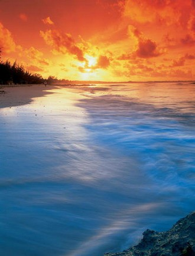

посетете
най-екзотичните
острови
на планетата |
- Островите Фиджи – Тих океан
- Остров Аруба - Карибско море
- Островите Фи Фи, Тайланд - Индийски океан
- Остров Камигуин
- Коледните острови, Австралия - Индийски океан
- Бора Бора, Френска Полинезия – Тихи океан
- Остров Мавриций, Макаренския архипелаг - Индийски океан
- Андаманските острови - Индийски океан
- Остров Бали, Индонезия - Индийски океан
- Великденските острови - Тихи океан
- Хавай - Тихи океан
|
 |